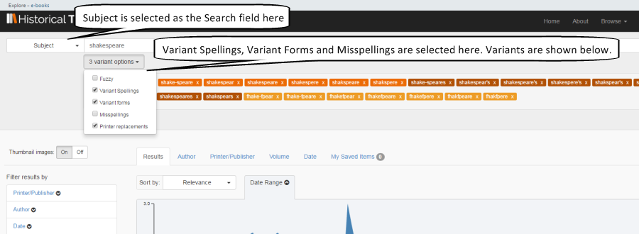
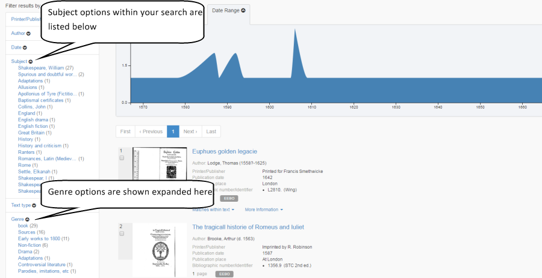

<div class="row">
    <div class="col-xs-12 topSpace">
        <div class="sideMenu">
            <div class="title">Support</div>
            <ul>
                <li class="selected"><a href="">Support home</a></li>
                <li><a href="/help/">Help file</a></li>
                <li><a href="/librarians/">Librarians</a></li>
                <li><a href="/faq/">FAQ</a></li>
            </ul>
        </div>

        <div class="support">

            <ol class="breadcrumb">
                <li class="active">Support Home</li>

            </ol>

           <h1>Music</h1>
           
           
           <p class="lead">It may surprise some users to hear that Historical Texts includes a lot of material on music, including discourses and treatises on music, historical accounts, correspondence, scores and sheet music. We've searched the archives to find some interesting and unusual texts, and offer some suggestions on how best to search for this kind of material.</p>
		
		<br />
		

<h2>Famous Composers</h2>
<p>There is a good deal of material in Historical Texts relating to famous composers. Here we have a poem composed in tribute after the death of Henry Purcell, Anecdotes of Handel, and the Music of the Poets &#45; A Musician&#39;s Birthday Book.</p>
       
<div class=row> <div class="col-sm-6 col-md-3"> <div class=thumbnail>  <div class=caption> <h3>A poem occasioned on the death of Mr. Henry Purcell, late musician in ordinary to His Majesty</h3>
<p>Published&#58; 1696</p> <p><span class="badge">EEBO</span></p><p><a href=https://historicaltexts.jisc.ac.uk/eebo-ocm07944551e class="btn btn-primary" role=button>View text</a> </p> </div> </div> </div> 

<div class=row> <div class="col-sm-6 col-md-3"> <div class=thumbnail>  <div class=caption> <h3>Anecdotes of George Frederick Handel, and John Christopher Smith.</h3></p>
<p>Published&#58; 1799</p> <p><span class="badge">ECCO</span></p><p><a href=https://historicaltexts.jisc.ac.uk/ecco-0671500600 class="btn btn-primary" role=button>View text</a> </p> </div> </div> </div> 

<div class=row> <div class="col-sm-6 col-md-3"> <div class=thumbnail>  <div class=caption> <h3>The Music of the Poets ... Second edition, completely revised.</h3> <p>Published&#58; 1898</p> <p><span class="badge">BL</span></p><p><a href=https://historicaltexts.jisc.ac.uk/bl-001939512 class="btn btn-primary" role=button>View text</a> </p> </div> </div> </div>
  

</div></div></div>


<h2>Musical Discourse</h2>
<p>Here we have music and religion colliding in &ldquo;A musick&#45;lector, or, The art of musick &#40;that is so much vindicated in Christendome &#40;discoursed of by way of dialogue between three men of several judgments&rdquo;, an &ldquo;Account of an infant musician Read at the Royal Society&rdquo; by renowned scholar Charles Burney, and &ldquo;Music and Manners in France and Germany&#58; a series of travelling sketches of art and society&rdquo;</p>

 <div class=row> <div class="col-sm-6 col-md-3"> <div class=thumbnail>  <div class=caption> <h3>A musick&#45;lector, or, The art of musick &#40;that is so much vindicated in Christendome&#41;</h3> <p>Author&#58; Solomon Eccles</p> <p>Published&#58; 1667</p> <p><span class="badge">EEBO</span></p><p><a href=https://historicaltexts.jisc.ac.uk/eebo-ocm11209887e class="btn btn-primary" role=button>View text</a></p> </div> </div> </div> 
 
 <div class=row> <div class="col-sm-6 col-md-3"> <div class=thumbnail>  <div class=caption> <h3>Account of an infant musician. Read at the Royal Society, Feb. 18, 1779. By Charles Burney, …</h3> <p>Author&#58; Charles Burney</p><p>Published&#58; 1779&#45;80</p> <p><span class="badge">ECCO</span></p><p><a href=https://historicaltexts.jisc.ac.uk/eccoii-1393401000 class="btn btn-primary" role=button>View text</a> </p> </div> </div> </div>
  
 <div class=row> <div class="col-sm-6 col-md-3"> <div class=thumbnail>  <div class=caption> <h3>Music and Manners in France and Germany: a series of travelling sketches of art and society.</h3> <p>Published&#58; 1774</p> <p><span class="badge">BL</span></p><p><a href=https://data.historicaltexts.jisc.ac.uk/view?pubId=bl-000691466&index=bl&pageId=bl-000691466-600298-75 class="btn btn-primary" role=button>View text</a> </p> </div> </div> </div> 
 </div></div></div>

         
<h2>More on Shakespeare &#45; expect the unexpected&#63;</h2>
<p>Some of the content in Historical Texts relating to Shakespeare isn&#39;t just his work or commentaries. 
Here we have a piece on Songs and Masques in &ldquo;The Tempest&rdquo;, a &ldquo;Lyric Ode on the Fairies, Aerial Beings and Witches of Shakespeare&rdquo; and &ldquo;Shakespeare&#39;s Gems&rdquo; &#45; a book of quotes, by play.
</p>
 
 <div class=row> <div class="col-sm-6 col-md-3"> <div class=thumbnail>  <div class=caption> <h3>A Lyric Ode on the Fairies, Aerial Beings, and Witches of Shakespeare.</h3> <p>Published&#58; 1776</p><p><span class="badge">BL</span></p><p><a href=https://data.historicaltexts.jisc.ac.uk/view?pubId=bl-003355070&index=bl&pageId=bl-003355070-568910-3 class="btn btn-primary" role=button>View text</a> </p> </div> </div> </div> 
 
 <div class=row> <div class="col-sm-6 col-md-3"> <div class=thumbnail>  <div class=caption> <h3>Songs and masques in the Tempest</h3><p>Published&#58; 1674</p> <p><span class="badge">EEBO</span></p><p><a href=https://historicaltexts.jisc.ac.uk/eebo-99895770e class="btn btn-primary" role=button>View text</a> </p> </div> </div> </div>  
 
  <div class=row> <div class="col-sm-6 col-md-3"> <div class=thumbnail>  <div class=caption> <h3>Shakspere Gems. By the author of &ldquo;The Book of Familiar Quotations&rdquo; i.e. L. C. Gent.</h3><p>Published&#58; 1880</p> <p><span class="badge">BL</span></p><p><a href=https://historicaltexts.jisc.ac.uk/bl-003354576 class="btn btn-primary" role=button>View text</a> </p> </div> </div> </div> 
  
   </div></div></div>           

<h2>Search tips</h2>

<p>Users can perform a Subject search for Shakespeare directly from the Search box using the drop&#45;down arrow. 
<br />
With early material, the Variant Spelling and Variant Forms in particular can be useful in order to find more material that regular searches might miss.</p>

<p>

<p/>

<br />
<p>Searches can be filtered by Genre or Subject using the options in the sidebar. Please be aware that the Subject option will only return results from EEBO collection, not the ECCO or BL collections.</p>
<br />


        
        
        </div>
        </div>
    </div>